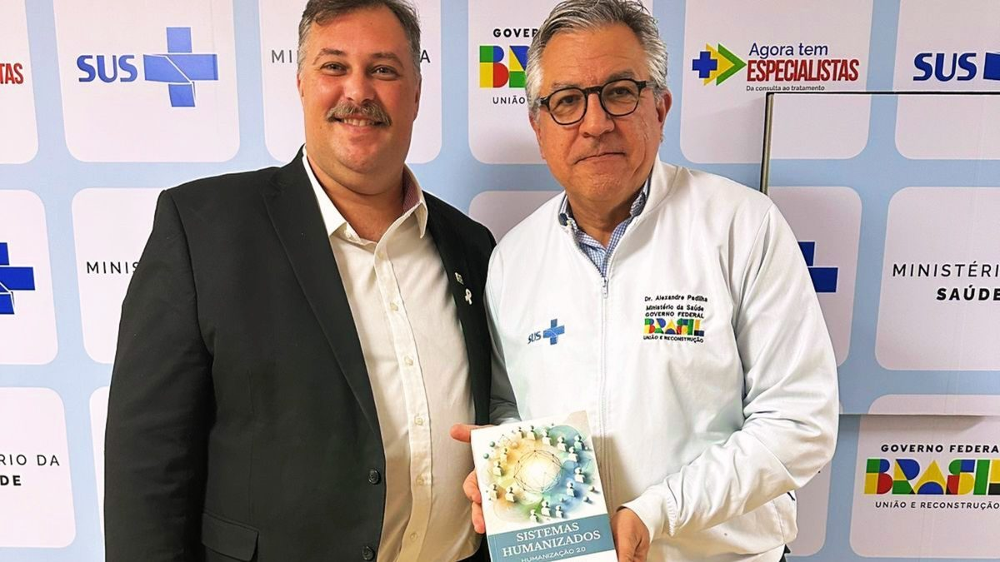
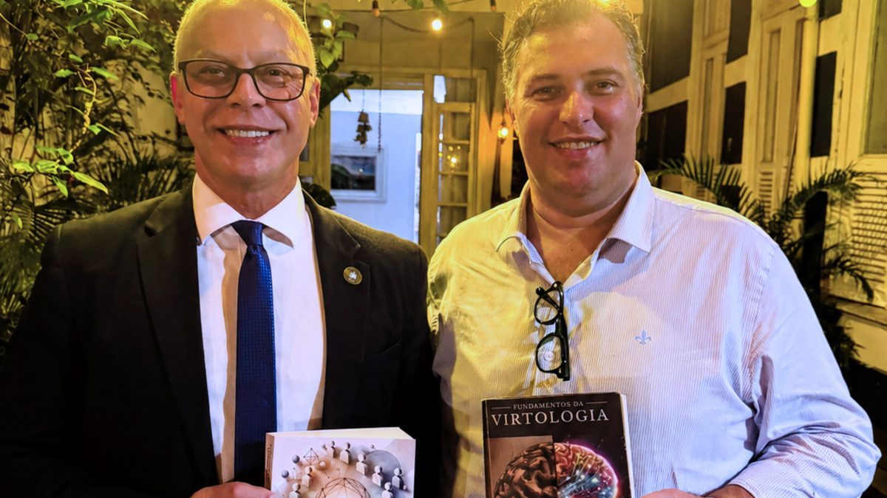
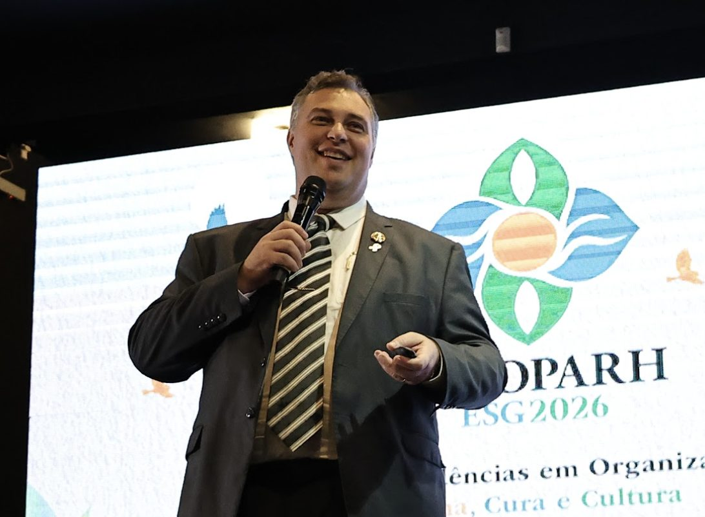

Livro físico ou digital + 3 horas de aulas

Sistemas HumanizadosHumanização 2.0
de Eduardo Casarotto
O futuro das organizações já começou a ser redesenhado.
Da ISO 27500, em 2016, à nova NR-1, em 2026, normas e documentos internacionais defendem que o futuro será baseado em organizações centradas no ser humano.
Neste livro, você tem a arquitetura que as constitui.
Livro físico
R$ 279
Livro impresso Sistemas Humanizados · Humanização 2.0. Inclui 3 horas de aulas gravadas com Eduardo Casarotto, com acesso imediato.
Frete incluso · envio pelos Correios
Quero o livro físicoLivro digital
R$ 147
Versão digital do livro Sistemas Humanizados · Humanização 2.0. Inclui 3 horas de aulas gravadas com Eduardo Casarotto, com acesso imediato.
Acesso imediato, enviado por e-mail e WhatsApp após o pagamento
Quero o livro digitalVocê escolhe uma versão. As 3 horas de aulas acompanham a versão escolhida, com acesso imediato.


Registros de encontros. As imagens não indicam endosso das autoridades ou instituições ao livro.
O futuro das organizações
As maiores instituições internacionais ligadas ao trabalho e à saúde já discutem mudanças nessa direção.
Em 2016, a ISO publicou uma norma internacional dedicada às organizações centradas no ser humano. Em 2019, vieram as orientações para que gestores levem esses princípios à estratégia, aos procedimentos e aos processos.
Também em 2019, a Organização Internacional do Trabalho aprovou a Declaração do Centenário, que defende uma abordagem centrada no ser humano para o futuro do trabalho. A Assembleia Geral da ONU endossou a declaração.
Em 2022, a OMS publicou diretrizes sobre saúde mental no trabalho que incluem intervenções nas condições organizacionais. E, em 2026, a nova redação da NR-1 passou a tratar expressamente dos fatores de risco psicossociais relacionados ao trabalho.
Esses acontecimentos fazem sentido para quem conhece de perto a sobrecarga, o adoecimento e as condições de trabalho que produzem sofrimento.
Temos que parar de tentar fazer os seres humanos se adaptarem melhor às empresas.
E começar a fazer as empresas serem compatíveis com os seres humanos.
Treinar pessoas e desenvolver líderes continua importante. O que muda é deixar de esperar que só isso resolva o que nasce na organização do trabalho.
Para profissionais de RH, saúde, segurança do trabalho e gestão, isso amplia a relevância de estudar como as organizações funcionam e como podem ser transformadas.
É nessa direção que se situam os Sistemas Humanizados - Humanização 2.0, a arquitetura desenvolvida por Eduardo Casarotto para estudar e orientar a construção de organizações centradas no ser humano.
De 2016 a 2026
- 2016ISO 27500Organizações centradas no ser humano.Fonte oficial
- 2019OIT e ONUAbordagem centrada no ser humano para o futuro do trabalho.Fonte oficial
- 2021ISO 45003Gestão dos riscos psicossociais.Fonte oficial
- 2022OMSSaúde mental e intervenções nas condições de trabalho.Fonte oficial
- 2026NR-1Riscos psicossociais no gerenciamento de riscos ocupacionais.Fonte oficial
Em 2019, a ISO também publicou a ISO 27501, com orientações para gestores. Cada documento tem o seu escopo, eles não formam um programa conjunto, e nenhum deles cita, valida ou recomenda os Sistemas Humanizados. Juntos, mostram instituições diferentes avançando na mesma discussão.
O futuro das organizações também muda o que vale a pena estudar.
Profissionais de diferentes áreas podem ampliar sua atuação ao compreender não apenas as pessoas, mas também os sistemas em que elas trabalham.
RH
O conhecimento sobre organizações centradas no ser humano amplia a análise de cultura, gestão, processos e condições de trabalho.
Saúde
A humanização passa a ser vista para além do atendimento, alcançando a organização dos serviços e as condições oferecidas a quem cuida.
Segurança do trabalho
A discussão sobre riscos psicossociais também pede atenção à maneira como o trabalho é organizado.
Gestores e consultores
Conhecer o funcionamento humano e organizacional amplia o repertório para analisar processos, regras, responsabilidades e decisões.
Esse campo ganha relevância por si. Estudar propostas ligadas a ele amplia o repertório profissional; o livro não confere habilitação nem garante cargo ou resultado.
Uma arquitetura para estudar como construir organizações centradas no ser humano.
Eduardo Casarotto desenvolveu os Sistemas Humanizados - Humanização 2.0, uma arquitetura própria que relaciona o funcionamento humano à maneira como as organizações são estruturadas e administradas: cargos, políticas internas, processos, avaliação, governança.
O livro reúne os fundamentos, os conhecimentos e os instrumentos dessa proposta. Boa parte dos capítulos não descreve só o que fazer: entrega o documento de trabalho, para a organização adaptar e aplicar.
É uma forma de conhecer de perto uma abordagem construída para trabalhar na direção dessa transformação.
- Páginas
- 449
- Capítulos
- 27
- Aulas incluídas
- 3 horas
- Catalogado na
- Biblioteca do Senado Federal
Veja o livro por dentro.
Eduardo Casarotto apresenta a obra e mostra os conhecimentos e instrumentos que fazem parte dos Sistemas Humanizados.
O que você encontra dentro do livro?
Os 27 capítulos seguem a ordem de quem vai construir: primeiro os fundamentos, depois a construção da estrutura, por fim a operação do dia a dia.
Os fundamentos
O que é humanização e o que é um sistema humanizado. Os cinco filtros com que se avalia qualquer estrutura. O orgulho e o egoísmo como dois sistemas de funcionamento, na formulação do autor, e por que a regra escrita decide qual deles a organização aciona. A história de como o trabalho chegou até aqui e as faixas de evolução organizacional.
A construção
Governança humanizada. O RH por inteiro: descrição de cargo, recrutamento, plano de carreira, avaliação de desempenho com a Terceira Competência, treinamento, pesquisa de clima, benefícios e desligamento. E o Manual das Necessidades Humanas, com ações de RH para cada necessidade.
A operação
Saúde mental no trabalho, com a leitura estrutural de burnout, brownout e boreout e o desenho do departamento de saúde mental. Espaço físico, inclusão e a estrutura de um projeto de certificação em humanização.
Os instrumentos prontos
Entre os documentos de trabalho que o livro entrega:
Manual de Humanização de Políticas Internas
O roteiro para revisar o que a organização já tem escrito, política por política, contra o funcionamento humano.
Política de Ética Humanizada e Compliance
A base de uma política de ética que vai além de cumprir lei: previne prática abusiva e protege quem denuncia.
Manual de Feedbacks Humanizado
Como estruturar o retorno contínuo, em vez de uma conversa uma vez por ano.
Manual de Atendimento ao Público
As regras de ouro do atendimento humanizado, prontas para treinar equipe.
Manual das Necessidades Humanas
Para cada necessidade humana mapeada pela obra, as ações concretas que o RH pode implementar, grupo por grupo.
Manual de Personalidade
O instrumento para entender temperamento, caráter e identidade no encaixe entre pessoa e cargo.
CIPIH
A estrutura da Comissão Interna de Prevenção e Incentivo de Humanização: composição, papéis e funcionamento.
Projeto de Certificação em Humanização
Estrutura, processos e diretrizes para certificar uma organização, com os critérios que tornam a verificação possível.
Além do livro, você recebe 3 horas de aulas com o autor.
Eduardo Casarotto aprofunda os conteúdos da obra em aulas gravadas que acompanham a versão física ou digital, com acesso imediato.
- O tema: a relação entre a exigência de gestão dos riscos psicossociais da NR-1 e os Sistemas Humanizados, ou seja, onde esses riscos nascem dentro da estrutura e como o sistema do livro pode apoiar essa gestão.
- O formato: aulas online e gravadas, para assistir quando quiser, no seu ritmo.
- O acesso: imediato. Acompanha a compra do livro, físico ou digital, sem custo adicional, e as instruções chegam por e-mail e por WhatsApp logo após a confirmação do pagamento.
As aulas acompanham o livro. Elas não são um curso com certificado nem fazem parte da pós-graduação.
Conheça Eduardo Casarotto.

Como criador dos Sistemas Humanizados - Humanização 2.0, relaciona fundamentos sobre personalidade e necessidades humanas à construção de políticas, processos, cargos, governança e critérios de gestão. O trabalho dialoga com a crescente discussão internacional sobre organizações centradas no ser humano, presente, entre outras referências independentes, na ISO 27500 e na ISO 27501. No Instituto Virtudes, essa proposta é aprofundada no livro, em aulas e na Pós-graduação em Sistemas Humanizados.
Eduardo Casarotto é pesquisador, autor, consultor, filantropo, fundador do Instituto Virtudes e criador da Virtologia e da Humanização 2.0. Condecorado com o título de Comendador Cavaleiro pela Câmara de Justiça de São Paulo.
Com mais de 25 anos de atuação como terapeuta e consultor organizacional, formou mais de 2.000 terapeutas e dedicou sua trajetória ao estudo do funcionamento humano e da relação entre ambiente, comportamento e adoecimento.
É autor de mais de 20 livros e de artigos publicados em periódicos científicos. Seu trabalho já foi apresentado no Plenário do Senado Federal, discutido em ambientes institucionais e aplicado em diferentes realidades humanas, organizacionais e sociais.
Mais informações sobre o livro
Qual a diferença entre o livro físico e o digital?
O conteúdo é o mesmo. O físico é o livro impresso, enviado pelos Correios com frete incluso. O digital é a versão eletrônica da obra. Você escolhe uma das duas; a compra de uma versão não inclui a outra.
As 3 horas de aulas acompanham as duas versões?
Sim. As aulas gravadas com Eduardo Casarotto acompanham tanto a versão física quanto a digital, sem custo adicional, e o acesso é imediato após a confirmação do pagamento.
Como recebo o livro físico?
Pelos Correios, para todo o Brasil. O pedido é enviado em até 5 dias úteis após a confirmação do pagamento, e a entrega costuma levar de 3 a 21 dias, conforme a distância. Os detalhes estão na Política de Frete.
Como funciona o acesso às aulas e ao livro digital?
O acesso é imediato: logo após a confirmação do pagamento, você recebe as instruções por e-mail e por WhatsApp. Se algo não chegar, fale com a equipe pelo e-mail grupo@institutovirtudes.com.br ou pelo WhatsApp +55 64 99642-8026.
É necessário conhecer a Virtologia?
Não. O livro apresenta os conceitos de que precisa no momento em que aparecem. Quem quiser a base completa da escola encontra no Fundamentos da Virtologia, mas ele não é pré-requisito.
Para quais profissionais a obra é relevante?
Para quem trabalha com pessoas e organizações: RH e gestão de pessoas, saúde, segurança do trabalho, gestores, consultores e profissionais de saúde mental no trabalho. A proposta se aplica a empresas, hospitais, escolas, gestão pública e outras instituições.
O que o livro aborda sobre a NR-1?
O livro e as aulas tratam dos riscos psicossociais e de como a estrutura da organização pode produzi-los ou evitá-los. A NR-1 é uma obrigação legal própria de cada organização: nenhum livro garante conformidade, que depende das medidas efetivamente implementadas e documentadas e dos profissionais responsáveis.
Qual é a relação entre o livro e a pós-graduação?
O livro apresenta a arquitetura dos Sistemas Humanizados. A pós-graduação aprofunda essa arquitetura num programa acadêmico de 360 horas, com aulas, avaliações, TCC e certificado emitido pela FACEO - Faculdade Centro Oeste, instituição credenciada pelo MEC. São ofertas independentes.
Escolha sua versão de Sistemas Humanizados.
Livro físico ou digital. As duas versões incluem 3 horas de aulas gravadas com Eduardo Casarotto, com acesso imediato.
Livro físico
R$ 279
Livro impresso Sistemas Humanizados · Humanização 2.0. Inclui 3 horas de aulas gravadas com Eduardo Casarotto, com acesso imediato.
Frete incluso · envio pelos Correios
Quero o livro físicoLivro digital
R$ 147
Versão digital do livro Sistemas Humanizados · Humanização 2.0. Inclui 3 horas de aulas gravadas com Eduardo Casarotto, com acesso imediato.
Acesso imediato, enviado por e-mail e WhatsApp após o pagamento
Quero o livro digitalVocê escolhe uma versão. As 3 horas de aulas acompanham a versão escolhida, com acesso imediato.
Quer estudar essa proposta numa formação acadêmica? Conheça também a Pós-graduação em Sistemas Humanizados - Humanização 2.0.
Trazemos o futuro. Instituto Virtudes